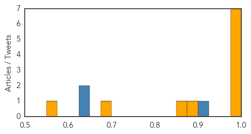
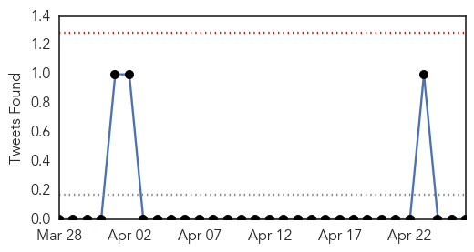

Ebola
30-Day Web Trend
0 alerts, 0 warnings

30-Day Twitter Trend
0 alerts, 0 warnings

Article Locations

Article Confidences
Top Articles:
- 1.000
- Sacred Heart prepares for future Ebola cases
- 0.999
- West Africa battles mystery of 'post-Ebola syndrome'
- 0.993
- Down to zero: Recovering from Ebola in Sierra Leone
- 0.990
- Down to zero: Recovering from Ebola in Sierra Leone
- 0.990
- UN resumes vaccination drive for three million children in West Africa
- 0.982
- UN chief names new head of Ebola mission as outbreak calms
- 0.980
- PCSO hands over ambulance for high-risk patients
- 0.898
- Final trial results for world's most advanced malaria vaccine published
- 0.860
- Saudi Arabia Assures Sierra Leone in Post – Ebola Recovery Plan
- 0.679
- The Changing Face of Global Health
- 0.552
- UN Chief Appoints New Special Envoy to Yemen
Top Tweets:
- 0.878
- Sacred Heart prepares for future Ebola cases - The Spokesman Review http://t.co/tdp4kkk8vj ebola EVD
- 0.878
- Sacred Heart prepares for future Ebola cases - The Spokesman Review http://t.co/iZSrTgVrxn ebola EVD
- 0.869
- Ebola Update: 26,074 confirmed, probable and suspected cases reported in 3 most affected countries, with 10,820 deaths. EbolaResponse
- 0.750
- 'Post-Ebola Syndrome' A New Mystery For WHO to Solve - The Inquisitr http://t.co/QEKMyekKLC ebola EVD
Cholera
30-Day Web Trend
0 alerts, 0 warnings
30-Day Twitter Trend
0 alerts, 0 warnings

Article Locations
Article Confidences

Top Articles:
Top Tweets:
-
No tweets found for Apr 26, 2015